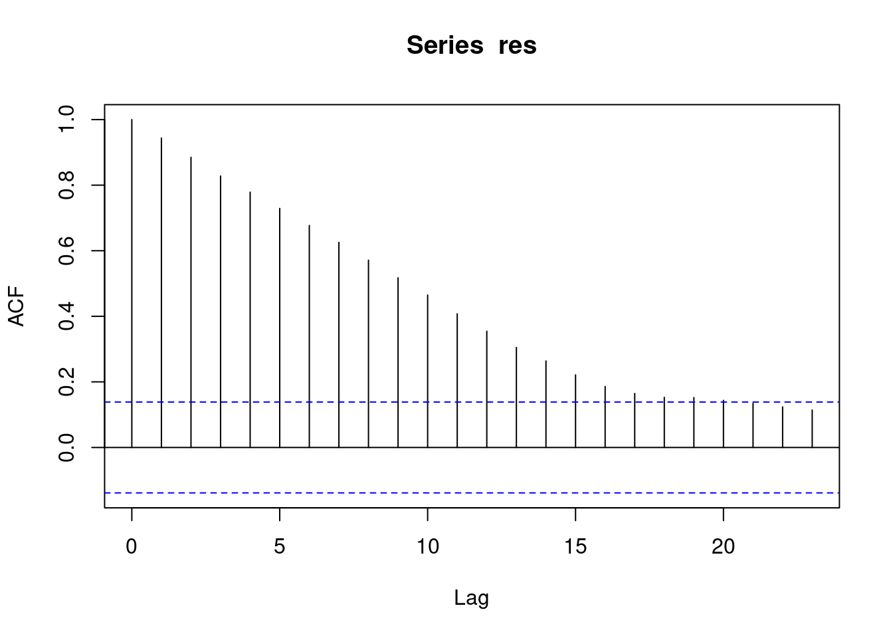

── Attaching core tidyverse packages ──────────────────────── tidyverse 2.0.0 ──
✔ dplyr 1.1.3 ✔ readr 2.1.4
✔ forcats 1.0.0 ✔ stringr 1.5.0
✔ ggplot2 3.4.4 ✔ tibble 3.2.1
✔ lubridate 1.9.3 ✔ tidyr 1.3.0
✔ purrr 1.0.2
── Conflicts ────────────────────────────────────────── tidyverse_conflicts() ──
✖ dplyr::filter() masks stats::filter()
✖ dplyr::lag() masks stats::lag()
ℹ Use the conflicted package (<http://conflicted.r-lib.org/>) to force all conflicts to become errors
Random walk model without a drift
\[
\begin{align}
y_{t} = y_{t - 1} + e_{t}, e_t \sim WN(\sigma^2)\\
\Delta y_{t} = y_{t} - y_{t - 1} = e_{t}\\
f' = \lim_{\epsilon \to 0}\frac{f(x) - f(x + \epsilon)}{\epsilon}
\end{align}
\] The solution of the characteristic equation of this model is equal to one. We say that the equation has a unit root.
\[
\lambda - 1 = 0 \implies \\
\lambda^* = 1
\]
The solution of this characteristic equation is 1. We say that the characteristic equation has a unit root.
ARIMA(0, 1, 0)
7.1 Random Walks Simulation
n <-200rw1 <-arima.sim(model =list(order =c(0, 1, 0)), n = n -1)rw2 <-arima.sim(model =list(order =c(0, 1, 0)), n = n -1)# rw2 <- 1.5 * rw1 + rnorm(n = 200)tibble(y =c(rw1, rw2),process =rep(c("A", "B"), each =200),time =rep(1:n, 2)) %>%ggplot(aes(x = time, y = y, color = process) ) +geom_line()
linreg_fit <-lm(rw2 ~ rw1)summary(linreg_fit)
Call:
lm(formula = rw2 ~ rw1)
Residuals:
Min 1Q Median 3Q Max
-12.8944 -2.9879 -0.0065 3.8737 10.3704
Coefficients:
Estimate Std. Error t value Pr(>|t|)
(Intercept) -0.4682 0.9624 -0.486 0.627
rw1 -0.7219 0.1134 -6.364 1.34e-09 ***
---
Signif. codes: 0 '***' 0.001 '**' 0.01 '*' 0.05 '.' 0.1 ' ' 1
Residual standard error: 4.924 on 198 degrees of freedom
Multiple R-squared: 0.1698, Adjusted R-squared: 0.1656
F-statistic: 40.5 on 1 and 198 DF, p-value: 1.336e-09
Regression model
\[
y_{t}: \text{ random walk 2} \\
x_{t}: \text{ random walk 1} \\
y_{t} = \beta_0 + \beta_1 x_{t} + u_{t}, u_{t} \sim N(0, \sigma^2)
\]
Estimated regression equation
\[
\hat{y}_{t} = 6.15 - 1.78 x_{t}
\] T-Test of the hypothesis
\[
H_0: \beta_1 = 0\\
H_1: \beta_1 \neq 0
\] We reject the null hypothesis if the p-value of the test is less than 0.05 (convention).
Spurious regression if y and x are unit-root processes.
\[
\hat{y}_{t} = -1.86 + 0.19 x_{t}
\]
7.2 How to check for spurious regression?
res <-residuals(linreg_fit)acf(res)

8 Unit root tests
AR(1) process without a constant
\[
y_{t} = \phi_1 y_{t - 1} + e_{t}, e_t \sim WN(\sigma^2)
\] If the process has a unit root, it follows that \(\phi_1 = 1\).
We would like to test the hypothesis:
\[
H_0: \phi_1 = 1\\
H_1: \phi_1 < 1
\]
The first difference of the random walk process is stationary, because it is simply equal to the pure random process \(e_{t}\) and it is stationary by the properties of the pure random process. We say that the process (in this case the random walk process) is integrated of order 1.
We can use the t-statistic for testing the hypothesis that the coefficient of \(y_{t - 1}\) equals 0, but the distribution of this statistic under the \(H_0\) (assuming that \(\phi_1 = 1\)) is not a t-distribution. Therefore, we need to use special critical values in order to perform the test.
summary(ur.df(rw1, type ="none", lags =0))
###############################################
# Augmented Dickey-Fuller Test Unit Root Test #
###############################################
Test regression none
Call:
lm(formula = z.diff ~ z.lag.1 - 1)
Residuals:
Min 1Q Median 3Q Max
-2.4319 -0.7968 -0.0641 0.6396 3.1853
Coefficients:
Estimate Std. Error t value Pr(>|t|)
z.lag.1 -0.003369 0.008315 -0.405 0.686
Residual standard error: 0.9943 on 198 degrees of freedom
Multiple R-squared: 0.0008286, Adjusted R-squared: -0.004218
F-statistic: 0.1642 on 1 and 198 DF, p-value: 0.6858
Value of test-statistic is: -0.4052
Critical values for test statistics:
1pct 5pct 10pct
tau1 -2.58 -1.95 -1.62
-1 in the regression formula instructs lm to exclude the intercept from the regression equation.
\[
\underbrace{\Delta y_{t}}_{z.diff} = \underbrace{y_{t - 1}}_{z.lag.1} + e_t
\] t-value is the value of the t-statistic.
\[
t = \frac{\hat{\beta}_1 - 0}{SE(\hat{\beta}_1)}
\]
\[
-0.007011 / 0.008509 = -0.824
\] To perform the test, compare the t-value with the critical values:
1pct 5pct 10pct
tau1 -2.58 -1.95 -1.62
and we reject the null hypothesis if the t-value value is lower than the critical values.
-0.824 > -1.62 (the critical value corresponding to a 10% significance level), so we cannot reject the null hypothesis.
\[
H_0: \phi_1 - 1 = 0
\]
8.2 Simulation 2: Stationary AR(1) with zero level
###############################################
# Augmented Dickey-Fuller Test Unit Root Test #
###############################################
Test regression none
Call:
lm(formula = z.diff ~ z.lag.1 - 1)
Residuals:
Min 1Q Median 3Q Max
-4.3897 -0.5694 -0.0054 0.6735 2.5924
Coefficients:
Estimate Std. Error t value Pr(>|t|)
z.lag.1 -4.129e-05 7.640e-04 -0.054 0.957
Residual standard error: 1.082 on 198 degrees of freedom
Multiple R-squared: 1.475e-05, Adjusted R-squared: -0.005036
F-statistic: 0.00292 on 1 and 198 DF, p-value: 0.957
Value of test-statistic is: -0.054
Critical values for test statistics:
1pct 5pct 10pct
tau1 -2.58 -1.95 -1.62
summary(ur.df(ar2, type ="drift", lags =0))
###############################################
# Augmented Dickey-Fuller Test Unit Root Test #
###############################################
Test regression drift
Call:
lm(formula = z.diff ~ z.lag.1 + 1)
Residuals:
Min 1Q Median 3Q Max
-3.2327 -0.6111 0.0591 0.6185 2.7507
Coefficients:
Estimate Std. Error t value Pr(>|t|)
(Intercept) 38.72772 5.64276 6.863 8.54e-11 ***
z.lag.1 -0.38589 0.05622 -6.863 8.53e-11 ***
---
Signif. codes: 0 '***' 0.001 '**' 0.01 '*' 0.05 '.' 0.1 ' ' 1
Residual standard error: 0.9742 on 197 degrees of freedom
Multiple R-squared: 0.193, Adjusted R-squared: 0.1889
F-statistic: 47.11 on 1 and 197 DF, p-value: 8.529e-11
Value of test-statistic is: -6.8635 23.554
Critical values for test statistics:
1pct 5pct 10pct
tau2 -3.46 -2.88 -2.57
phi1 6.52 4.63 3.81
Compare the t-value (-6.253) to the critical values:
1pct 5pct 10pct
tau2 -3.46 -2.88 -2.57
-6.253 < -3.46 (1-percent critical value) => we reject the null hypothesis at a 1-percent significance level.
If this process has a unit root, then its characteristic equation
\[
\lambda ^2 - \phi_1 \lambda - \phi_2 = 0
\]
has a solution \(\lambda^{*} = 1\), therefore, setting \(\lambda = 1\) satisfies the equation, and we obtain:
\[
1^2 - \phi_1 - \phi_2 = 0
\]
Therefore, if the process has a unit root, its coefficients sum to one. This is a hypothesis that we can test using data. Following the approach of the DF-Test, we can try to construct a regression equation where one of the coefficients is \(1 - \phi_1 - \phi_2\). Then we can conduct a test of the null hypothesis that this coefficient is zero.
It turns out that we can reparemetrize the AR(2) model to obtain such an equation:
where \(\alpha_t\) is a random walk process: \(\alpha_t = \alpha_{t - 1} + \epsilon_t\). If \(y_t\) is trend-stationary (i.e. has no unit roots), then the variance of \(\epsilon_t\) is zero (i.e. \(\alpha_t\) is a constant process).
With the KPSS test we reject the null hypothesis (trend-stationarity) for large values of the test statistic.
summary(ur.kpss(rw1))
#######################
# KPSS Unit Root Test #
#######################
Test is of type: mu with 4 lags.
Value of test-statistic is: 1.7958
Critical value for a significance level of:
10pct 5pct 2.5pct 1pct
critical values 0.347 0.463 0.574 0.739
summary(ur.kpss(ar1))
#######################
# KPSS Unit Root Test #
#######################
Test is of type: mu with 4 lags.
Value of test-statistic is: 0.398
Critical value for a significance level of:
10pct 5pct 2.5pct 1pct
critical values 0.347 0.463 0.574 0.739